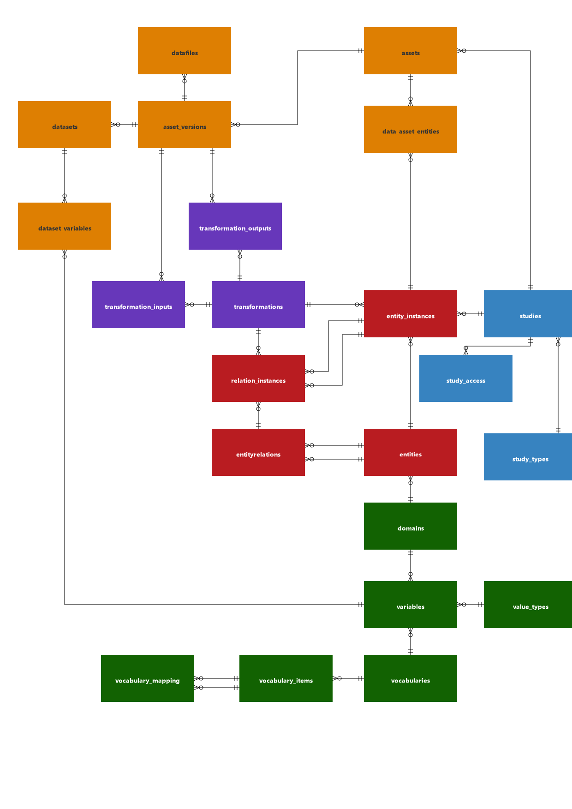

Introduction
This package creates and ingest data for the AHRI Trusted Research Environment into a PostgreSQL and ducklake managed data lake.
Data ingestion is specific to a study, where a study is any research study collecting data about entities and the relationships between these entities.
AHRI_TRE can import data directly from a REDCap project and create the necessary metadata to describe the data in the project.
Database Structure
The conceptual model of the AHRI_TRE is shown in Figure 1. 
Studies
A study is described in the following tables:
| Table Name | Description |
|---|---|
| studies | A research study collecting data about entities and the relationships between them |
| study_types | Record different types of studies contributing data to the TRE |
| study_access | Access control linking users to studies and used in row level security |
| study_domains | Associate studies with domains |
Entities
The entities and the relationships between them are described in the following tables:
| Table Name | Description |
|---|---|
| entities | Entities such as individuals, households, etc. and links to public ontologies |
| entityrelations | Relationships between entities, such as household membership, and links to public ontologies |
| entity_instances | Specific instances of entities in a study, allows linking of instances, e.g. a person to data assets containing data about that person |
| relation_instances | Instances of entity relationships, e.g. the membership of a specific person to an instance of a household |
Assets
The data assets containing the data collected by a study are described in the following tables:
| Table Name | Description |
|---|---|
| assets | Digital assets such as datasets and files contained in the data lake |
| dataassetentities | Link assets to entity instances, to track instances associated with an asset |
| asset_versions | Used to track different versions of assets |
| datafiles | A specific version of a file (binary large object(BLOB)) stored in the data lake |
| dataset | An asset version of tabular dataset managed by ducklake in the data lake |
| dataset_variables | The variables associated with the columns in the dataset |
Transformations
Transformations tracks the process of ingesting, transforming and exporting data from the TRE. This is described in the following tables:
| Table Name | Description |
|---|---|
| transformations | Documents the transformation (ingest, transform, entity instance generation, exporting, and placement in a data repository) |
| transformation_inputs | The input data asset/s used by the transformation |
| transformation_outputs | The data asset/s produced by the transformation |
Variables
The variables representing the data contained in datasets, is described by the following tables:
| Table Name | Description |
|---|---|
| domains | Variable names are unique within a domain |
| variables | Documents a variable |
| value_types | Representing the different datatypes, variables can assume |
| vocabularies | The values a categorical variables can assume, are contained in a vocabulary |
| vocabulary_items | The individual categories (codes) in a vocabulary |
| vocabulary_mapping | The items of one vocabulary can be mapped to those in another vocabulary |